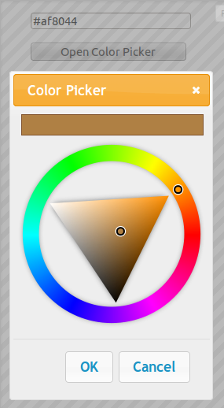
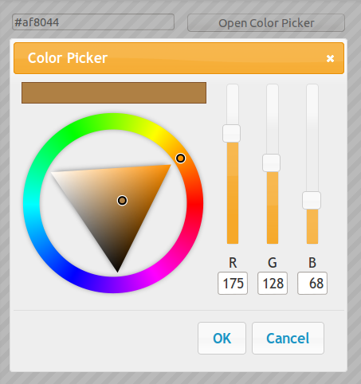
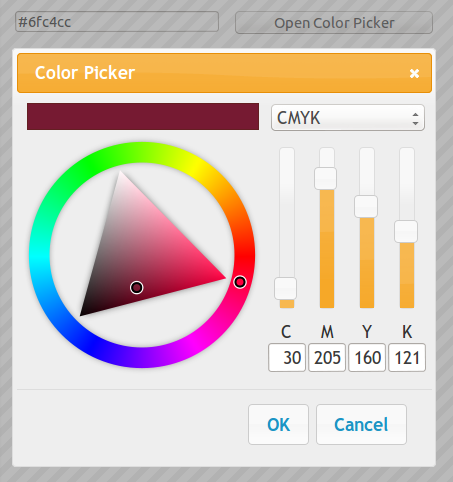

<?php

require '../template.php';
require 'menu.php';

$html  = getHeader('..', 'ui-dialog', 'Documentation / Demos / jQuery UI dialog');
$html .= '<div class="content-primary">';
$html .= '<form action="#" method="get">';
$html .= '<h2>jQuery UI dialog</h2>';

$html .= '<div data-role="collapsible" data-collapsed="false"';
$html .= ' data-theme="b" data-content-theme="d"';
$html .= ' data-collapsed-icon="arrow-r" data-expanded-icon="arrow-d">';
$html .= '<h3>jQuery UI dialog</h3>';
$html .= '<p></p>';
$html .= '<a data-role="button" data-theme="c" href="http://jsfiddle.net/roccivic/42kW9/embedded/result,js,html,css/">jsFiddle: Single color picker</a>';
$html .= '<a data-role="button" data-theme="c" href="http://jsfiddle.net/roccivic/9C2WT/embedded/result,js,html,css/">jsFiddle: Multiple color pickers</a>';
$html .= '<a data-role="button" data-theme="c" href="http://jsfiddle.net/roccivic/5MrUy/embedded/result,js,html,css/">jsFiddle: Multiple resizable color pickers</a>';
$html .= '</div>';

$html .= '<div data-role="collapsible" data-collapsed="false"';
$html .= ' data-theme="b" data-content-theme="d"';
$html .= ' data-collapsed-icon="arrow-r" data-expanded-icon="arrow-d">';
$html .= '<h3>jQuery UI dialog with panel</h3>';
$html .= '<p></p>';
$html .= '<a data-role="button" data-theme="c" href="http://jsfiddle.net/roccivic/uHupG/embedded/result,js,html,css/">jsFiddle: Single color mode in panel</a>';
$html .= '<p></p>';
$html .= '<a data-role="button" data-theme="c" href="http://jsfiddle.net/roccivic/qkeYC/embedded/result,js,html,css/">jsFiddle: Multiple color modes in panel</a>';
$html .= '</div>';

$html .= '</form>';
$html .= '</div>';
$html .= '<div class="content-secondary">';
$html .= '<ul data-role="listview"  data-theme="c" data-dividertheme="d">';
$html .= getDemosMenu('..', 'ui-dialog');
$html .= '</ul>';
$html .= '</div>';
$html .= getFooter();

echo $html;

?>
